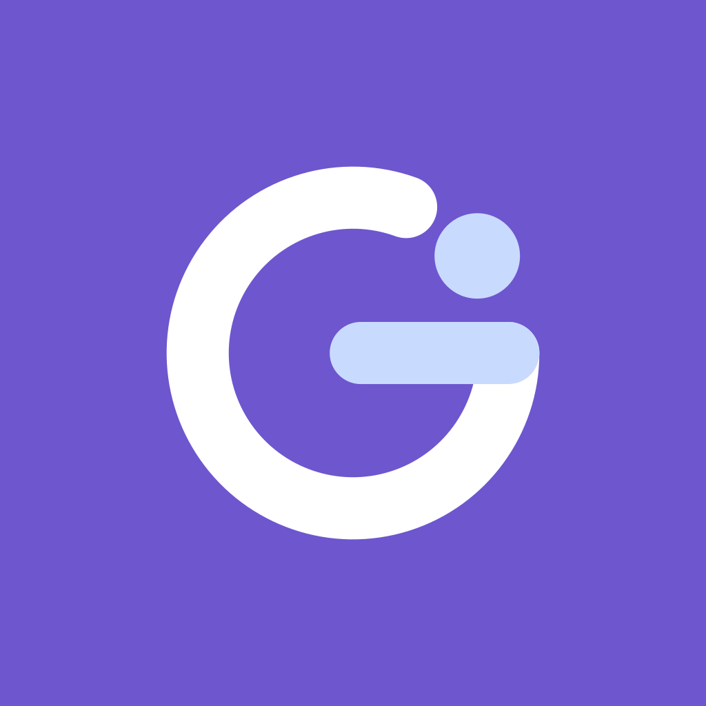
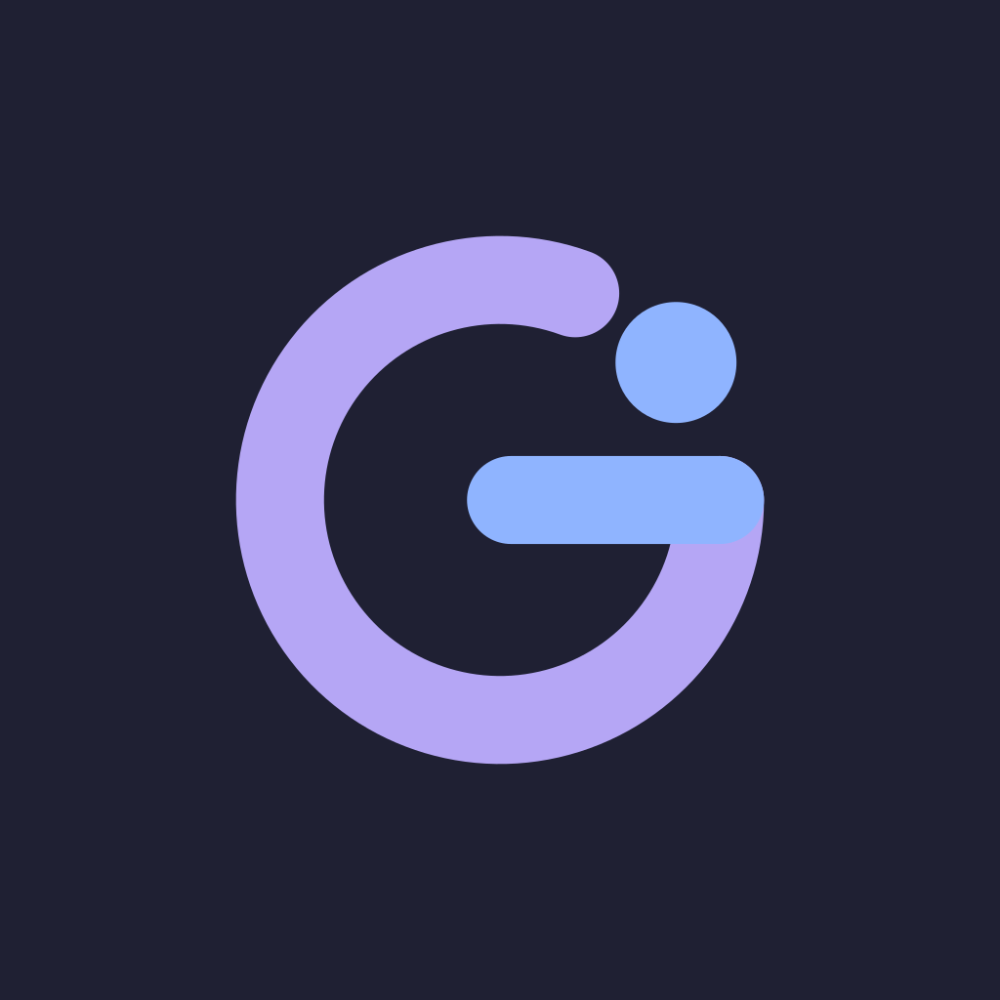

GWAY logosu
Bir yol kıvrılıp G olur, bir üye o yola adım atar. Hem "GWAY"in G'si, hem topluluğuna giden yol.
GWAY
GWAY
GWAY


Mor #6E56CF
Mavi #2F6FE0
Gece #1F2033
Açık mavi #C9DAFF
Yumuşak mor #B5A6F5
Yumuşak mavi #8FB4FF